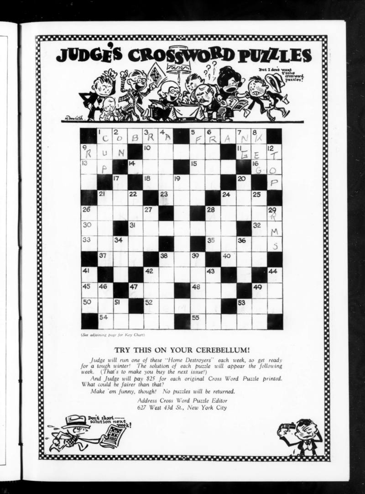
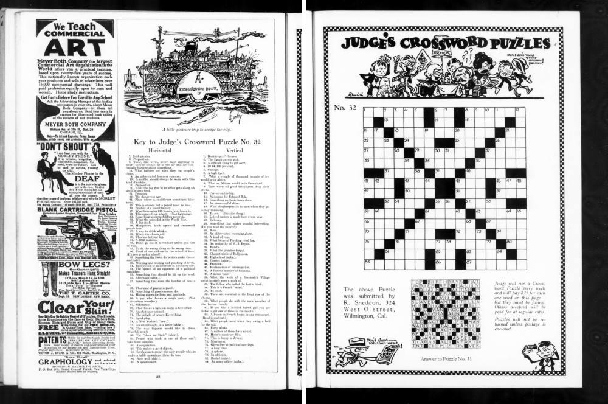
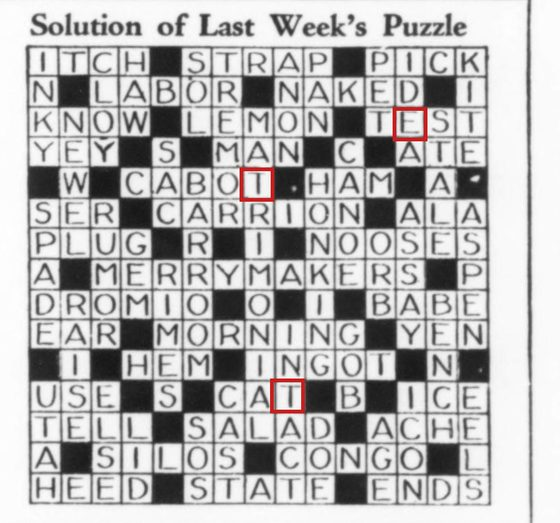
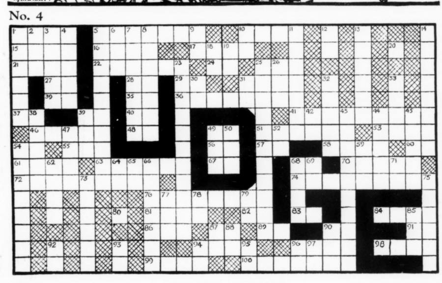

Judge, 1924–1939: our first full series
Every crossword Judge magazine printed, 531 puzzles, read from scans on archive.org into xd files. What went well, what was hard, and what we're changing for the next one.

Judge was a weekly humor magazine. In the fall of 1924, with the country "Cross Word mad", it asked readers to send in humorous crosswords, paying for each one it printed. The first ran on 1 November 1924, and the last we have ran in January 1939, by which time Judge was a monthly printing two puzzles an issue. Readers wrote nearly all of them: 311 different names appear in the bylines.
Until this month those puzzles existed only as page images. Now every one is an xd file, a plain-text crossword format, with its grid, clues, answers, title, constructor and date, and a link to the scan it came from. In xd they can sit in a research corpus beside a century of later puzzles, where they can be searched, counted and compared, and preserved for posterity. Our Judge puzzles are on their way into Saul Pwanson's gxd, the crossword corpus our own research tools are built on.
Judge was the first full series the Every Puzzle Project took from start to finish, and we learned a lot. This is the story of how it went.
How a puzzle gets from a scan to xd
- Findsearch archive.org's page text for crossword pages
- ReadOCR built for this project: grid, clues, answer key
- Agent reviewClaude checks the reading against crops of the scan
- Proof pagea person checks what's left, with the scan beside it
- Ledgerevery change, with who made it and what it was
- xdone file per puzzle, rebuilt from the ledger
- gxdthe research corpus
The OCR does more than read text. A crossword's black squares decide its numbering, so the grid says which clue numbers must exist and in what order, and the clue text is fitted to that list. That repairs misread numbers and wrapped lines, and where grid and clues still disagree, that's exactly where someone should look. Judge printed each answer key a week or more later, so the pipeline also searches later issues for a key whose black squares match.
Then Claude reviews each puzzle. It reads the OCR as text first, the way a person proofreads, and looks at the scan only where something looks wrong: a crop of one clue, a few squares, the byline. Each review is a short list of corrections and a verdict: ready, or what's left for a person. A person then proofs the puzzle on the review site, which shows the transcription next to the scan, with every change labelled by who made it. Volunteers contribute by directing Claude through the same steps.
Every correction, from an agent or a person, goes into an append-only ledger with a name on it, and the xd files are rebuilt from it. Nothing reaches an xd file without showing on the review page, along with where it came from.
What went well
Agents did the reading; people made the judgement calls
Of the ledger's roughly 12,000 rows, about 11,200 were written by agents. Human reviewers made most of the rest: the project's maintainer made 489 edits by hand on 172 puzzles, and helpers on the review site made 46. That's the split we were hoping for. Claude is good at the patient part: comparing 90 clues and 200 squares with a scan, one by one. A person is needed for the questions with no right answer in the scan: is this a misprint to keep, or a broken letter to fix? Is that an extra black square, or a smudge?
It was also affordable. With a reviewer agent trimmed to the few tools it needs, a puzzle cost about 17,000 tokens, about 0.15% of a weekly Claude allowance. When we had two separate reviews of the same puzzles, they agreed on 91% of their corrections.
The tools learned from the reviewers
Every review ends with notes on what the tools got wrong: 1,599 of them for Judge. We group them across a batch, and each kind becomes either a fix in the code or a line in a short notes file the next batch of reviewers reads. The biggest win came early. The first ten puzzles a person reviewed needed 88 edits, and 52 of those were answer-key letters read as I. None had been flagged, because the OCR was sure of them. A new way of reading each square fixed all 52:
Two habits kept changes like that safe. We measured each change against the puzzles people had already corrected before merging it. One segmentation change that looked right on a handful of puzzles turned out to make nine of them worse. And the importer refuses a grid fix whose numbering no longer matches the printed clues. That caught real agent mistakes, including one on the last day.
Narrow pages are fast pages
The best review tool was the narrowest. On the last day, the remaining doubtful answer-key letters went on a single page: a crop of each square from the scan, the letter we had, keep or change. A person can settle one of those in seconds. Proofing a whole puzzle, once the page showed everything with its evidence, took about two minutes.
What was hard
1. Finding the puzzles came last, not first
Finding the pages sounds like the easy part. It wasn't. In 1925 and 1926 Judge printed the grid under a decorative title the OCR couldn't read, with the clues on the facing page. Neither page looked like a crossword on its own, and our first run found almost nothing from those two years.

Fixes like that kept coming. Some keys were printed under the next week's puzzle. Some were cut into pieces by faint rules. No. 156 was printed as No. 155. Some keys were in double issues, and some issues had a second puzzle. The puzzle numbers were our completeness check, and in the end every printed number was found. But 18 puzzles and about 70 answer keys turned up only in a final hunt for gaps, after most of the review was done. Each late find reopened puzzles that had already been checked: a newly found key meant letters nobody had looked at yet.
Help came from outside Judge, too. In 1925 newspapers reprinted its puzzles as "Cross Word Funnies, selected by Judge". Matching those reprints back to the magazine turned up puzzles that were in archive.org's scans but that our search had missed.
The lesson: settle everything the search turns up (missing numbers, keys that almost match a grid, duplicate scans) before any review starts. Next time, nothing goes to review until that list is empty.
2. One letter, all the way through
The answer keys were hand-lettered in a thin, light style, and the OCR kept reading T as I. (Also D as O, S as E, and the hand-lettered A as nothing at all.) The worst part was that it was sure of itself, so our low-confidence flags never fired.

The reading fix described above took care of most of it, but not all. On the last day, a rough check of every answer against a word list found about 60 more strong suspects, a dozen of them in puzzles already marked done. The check is simple: an answer that isn't a known crossword word, but becomes one when you change an often-confused letter, gets flagged. For the next series it runs from the first day, before anyone reviews anything.
3. The thirty-minute touch-up that took all day
On 11 October the plan was half an hour of touch-up on the review site. It took the whole day, and almost none of that time went on crosswords. Every problem that day had the same shape: two parts of the system worked out the same fact separately and got different answers. Nothing noticed until a person opened a page.
The root of it was that each puzzle existed in six forms:
So, for example, 17 puzzles showed "no answer key" although their xd had one, because two tools each worked out which key a puzzle has, separately. One proof page showed an older copy of a puzzle, cached on the content delivery network. Some puzzles were counted as checked because a file existed, not because anyone had checked them.
The rule "the review page shows exactly what's in the xd" had been a convention. Now it's a check: the page is built from the xd itself, and a puzzle can't be published unless the round trip matches. For the next series, each proof will also record a fingerprint of the exact xd file it checked. A puzzle is done when a person's proof matches the current file and they said it's ready.
Some things we found
Judge's puzzles are a window on what a humor magazine's readers found funny between the wars. Some clues the reviewers enjoyed:
The wages of sin.
HEADLINESNo. 325, January 1935. Ten years earlier, two 1925 puzzles had answered the same clue with CASH.Get a long little doggie.
DACHSHUNDNo. 331, April 1935A sea-going gallstone.
PEARLNo. 346, December 1935This is very shad.
ROENo. 391, October 1937. (In 1936, "This is very shady." was ELM.)
Constructors played with the grid itself. In No. 4 (22 November 1924), the black squares spell the magazine's name, with HA HA in cross-hatching in two corners:

Two weeks later, No. 6 (by Alfred L. Pelham, of Cambridge, Mass.) was two face-shaped grids sharing one clue list: "Before Reading Judge" and "—and After". No square grid can hold that, so our xd stacks the two faces one above the other, and says so on the puzzle's review page.

And in December 1936 a puzzle called "Dirty Work at the Crosswords" turned the grid into a whodunit. The letters in its circled squares were clues to "the culprit's identity", three words of 3, 7 and 8 letters: THE FARMER'S DAUGHTER.
What's next
The Judge puzzles go to gxd next. For the next publications (GAMES magazine from 1977, then the Boston Globe, whose crossword goes back to 1917), the order changes:
- Find everything first. Every gap in the numbering, near-miss answer key and duplicate scan is settled, with links to the evidence, before any review starts.
- Check the answer words from day one, and give people the narrow key-squares page as the normal way to check keys.
- One copy of the truth. The review page shows the xd itself, proofs record exactly which version they checked, and each puzzle's answer key is decided once and saved.
- One command for the maintainer, which imports, rebuilds, checks and publishes, and stops when something looks surprising.
Most of the work on the next series should be people making quick judgement calls with the evidence in front of them, and Claude doing the reading.
How you can help
- Tell us about a puzzle. The catalog lists every publication known to have printed a crossword. If you've seen a puzzle in a paper or magazine we're missing, even on paper with no link, report it there. No technical skills needed.
- Hunt for Cross Word Funnies. If you have newspaper archive access, Judge's repo says what to look for.
- Check puzzles against the scans, by directing Claude through blitz, or by hand on the review site.
- Follow Judge's status, puzzle by puzzle, on its status page.
This is a research archive: an accurate record of puzzles as they were printed, each linked to its source scan. It isn't a place to play old puzzles. The scans shown here are from Judge issues published before 1931, which are in the public domain. Thanks to the Internet Archive for the scans, to Saul Pwanson for gxd, and to David Steinberg's Pre-Shortzian Puzzle Project for showing what volunteers can do.